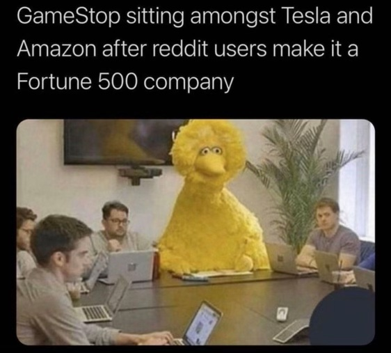

When I first heard that GameStop was trending all over social media, I thought that people were just upset about not being able to get the PS5 after the latest drop of consoles. Upon further inspection of the Twitter moment, I stumbled upon this video, and began to look into why people were screaming “HOLD THE LINE” and “TO THE MOON” everywhere. To be honest, I am still no expert on the stock market and how it works. However, I do know that this would have been impossible without the prevalence of social media. Platforms such as Reddit allow people from across the world to connect through small, interest-based communities such as r/WallStreetBets. This subreddit was the reason behind the success of their mission to purchase GameStop stocks and hold them, causing hedge fund short sellers to lose billions after forcing a short squeeze. The events of this past week have changed Wall Street permanently, and is much more than just a trending meme.
To me, the most interesting argument that has been unearthed is what role social media played in this situation. In particular, Reddit has been under speculation to the point where the SEC began investigating fraud within the r/WallStreetBets. It’s worth noting that all plans made by the people of the subreddit to short squeeze GameStop’s stock were public, as it is a public subreddit. They never tried to hide their intentions or secretly ambush the hedge funds that planned on shorting. I don’t believe there was ever any serious threat to security, because all people did was pay attention to what hedge funds like Melvin Capital were doing and take advantage of the data to stop an already questionable practice. People are bored and stuck at home, so they did the research and noticed that GameStop was the most shorted stock and planted a big target on Melvin Capital’s forehead.
I can’t talk about these events without mentioning Keith Gill (u/DeepF*ckingValue), the original poster of the GameStop stock trends. If you haven’t seen his original analysis that was posted six months ago, you can watch it here (hint: go to 49:15 to see him predict the future). From an Information Science perspective, it’s impossible to overlook the fact that Keith Gill used the extensive amount of data available to everyone to notice the shorting that was occurring. Gill utilized the public data on $GME to form an in-depth analysis of the malpractice that hedge funds were engaging in. This is an example of how data literacy can go a long way with informing certain practices such as investing, which is mostly risk but it also rewards critical analysis using the data that already exists.
Of course, there is a definite downside to what has occurred. The accessibility of the internet and the way memes can spread like wildfire lead to people who haven’t done calculated research to invest. The social media frenzy drove many to buy the stock without knowing its potential repercussions and thus, many have gone in the red during the comedown. The cult-ish environment of r/WallStreetBets combined with apps such as Robinhood that make it easy for retail investors to trade made the short squeeze possible. This was a coordinated effort, made possible by the community-centered platform Reddit, with people from across the nation coming together to execute it all together. It is undeniable how the events of last week have changed the ways of Wall Street permanently, and what’s to come next will be interesting.
